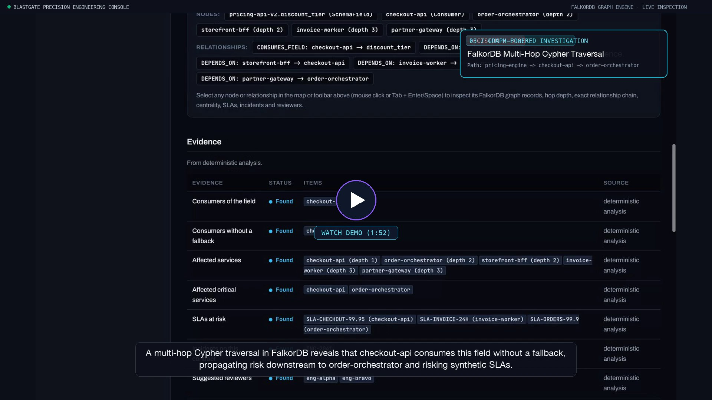

Know what breaks
before you merge.
What could break if I merge this change? BlastGate traces code changes through connected FalkorDB service graphs to uncover downstream impact, investigate evidence with allowlisted MCP tools, and recommend defensible pre-merge decisions.
Live multi-hop dependency path discovered in FalkorDB: unhandled consumer checkout-api cascades to critical bottleneck order-orchestrator.
Watch BlastGate in Action
Experience the complete pre-merge investigation: Gristle AST extraction, FalkorDB multi-hop blast radius traversal, 5 allowlisted MCP tools, deterministic BLOCK policy, and isolated counterfactual simulation.

High-definition technical walkthrough recorded on the live Precision Engineering Console. Features genuine Git diffs, AST code graphs, and deterministic multi-hop Cypher queries.
⚡ Key Moments in This Demo
Code-Local Blindness
Why standard CI passes on breaking contract changes that cripple downstream services.
AST Code Graph (Gristle)
Indexes PriceQuote.discount_tier: str → dict and maps to route handlers.
Deterministic BLOCK Verdict
Hard rules engine renders BLOCK without LLM hallucination or prompt instability.
FalkorDB Multi-Hop Traversal
Discovers unprotected consumer checkout-api and bottleneck order-orchestrator (betweenness 4.0).
Graph Incident Memory
Recalls past outage INC-2041 caused by an unmitigated contract change.
5 Allowlisted MCP Tools
Deterministic offline planner systematically executes allowlisted tools via tool next_actions.
Counterfactual Simulation
Simulates fallback mitigation on an isolated graph copy (CLEAR, marked unverified).
The Cost of Code-Local Blindness
In microservice architectures, a single field type change looks harmless in a local git diff. But standard CI, linters, and PR reviews cannot see across repository boundaries.
What Your Team Sees
- Local File Diff:
discount_tier: str → dictin one isolated file. - Passing Tests: Local unit tests pass because only the producer is checked.
- Zero Graph Awareness: Unaware that
checkout-apiparses this contract as raw text. - Hidden Cascade: Unaware that
order-orchestratordepends oncheckout-apidownstream. - Outcome: Merged to production → Runtime outage → Emergency rollback.
What BlastGate Discovers
- AST Code Graph: Gristle indexes functions and routes connected to
PriceQuote. - Validated Mapping: Maps code symbol to
pricing-api-v2.discount_tiervia contract rules. - Multi-Hop FalkorDB Traversal: Traverses 3 hops to identify 5 affected downstream services.
- MCP Tool Investigation: Detects missing fallback, computes betweenness centrality (4.0), and flags past outage
INC-2041. - Defensible Decision: Authoritative BLOCK with clear reviewers (
eng-alpha,eng-bravo) and $43,000 assumed SLA risk.
Connected Dual-Graph Intelligence
BlastGate connects two complementary views of the world: static source code ASTs and dynamic runtime service topologies.
Code Graph (AST)
Indexed via Gristle in an isolated environment. Extracts Python AST nodes: classes, methods, endpoints, and symbol references.
Validated Contract Mapping
Strict schema mappings in blastgate.map.json connect code-level symbols to published service endpoints with verified validation statuses.
FalkorDB Service Graph
Cypher queries traverse service dependencies, consumers, SLAs, and historical incidents. Computes graph algorithms like betweenness centrality.
MCP Agent Investigation
Allowlisted Model Context Protocol tools let the agent investigate blast radius, verify fallback readiness, and gather evidence before deciding.
Built for Engineering Rigor
Every feature is backed by real connected graph queries and deterministic safety gates.
Real Git Diff & AST Analysis
Direct integration with Gristle code graphs parses the actual Git change. Clearly distinguishes code-level links from runtime service invocations.
AST IndexingMulti-Hop FalkorDB Traversal
Traces transitive dependency paths up to 3+ hops deep. Discovers that an unhandled consumer cascades to critical downstream systems.
Cypher Traversal5 Allowlisted MCP Tools
Tool execution via Model Context Protocol: inspect_change, inspect_contract_coverage, trace_blast_radius, analyze_network_criticality, and retrieve_incidents_and_reviewers.
Deterministic Verdict Engine
Policy rules are authoritative and deterministic. The agent gathers evidence, but cannot hallucinate or override a BLOCK, WARN, or CLEAR decision.
Explainable PolicyIsolated Counterfactuals
Simulate hypothetical mitigations (such as adding a fallback) on a sandboxed graph clone (GRAPH.COPY). The live decision remains strictly protected.
Investigation Memory Graph
Opt-in temporal memory stores prior investigations, revalidating previous conclusions against current graph reality without stale assumptions.
Temporal MemoryDesigned for All Five Judging Criteria
How BlastGate directly demonstrates Track 01: Agents That Act on Connected Data.
| Criterion | BlastGate Implementation | Evidence in Demo |
|---|---|---|
| 1. Multi-hop reasoning | Traces pricing.py → pricing-engine → checkout-api (hop 1) → order-orchestrator (hop 2) → invoice-worker (hop 3). |
Interactive SVG Impact Map |
| 2. Graph queries & algorithms | Executes Cypher dependency paths, fallback checks, and calculates sampled betweenness centrality scores. | Centrality: 4.0 on order-orchestrator |
| 3. Tool selection via MCP | Discovers and executes 5 allowlisted MCP tools with strict argument sanitization and duplicate call prevention. | Full Tool Timeline & Reasons |
| 4. Actions based on graph data | Missing fallback and high centrality trigger incident retrieval (INC-2041) and reviewer suggestions (eng-alpha, eng-bravo). |
Authoritative BLOCK Verdict |
| 5. Explainable results | Every verdict references concrete Cypher node IDs, assumed SLA penalties ($43k), and counterfactual validation. | Isolated GRAPH.COPY Simulation |
Follow the graph. Understand the impact. Decide with evidence.
Launch the interactive investigation console on PR-900 or follow the step-by-step judge walkthrough.